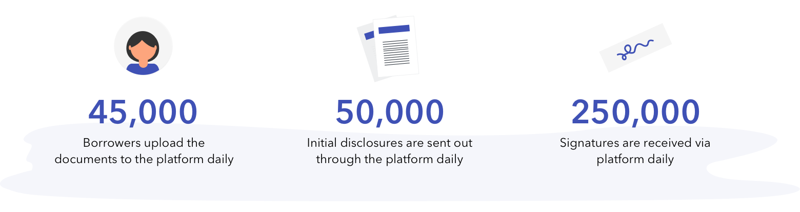

Mortgage software
Ellie Mae is an enterprise mortgage software company. The company is working on automating and streamlining the mortgage process from initial application to selling off the loan in the secondary market. The software helps lenders lower the costs and time to close the loan. Currently, ~40% of the mortgages in the United States pass through the software. Until recently, Ellie Mae was a desktop client, but now we are migrating our platform to the web.
{kind=link}
Managing loan documents
It's a no brainer that one of the major components of processing a mortgage is documents. A loan is made up of a lot of documents like the ones uploaded by the borrower (like pay stubs and bank statements), sent by other agencies (like credit and title reports) and generated by the lender as part of the loan processing (like disclosures). Every document is an essential element to verify the lending decision.
Since document management and processing is at the heart of any mortgage loan, making it an efficient process not only increases the productivity of the lenders but reduces the cost of closing the loan.
{kind=link}
Complex user groups
While handling thousands of loan documents is in itself a daunting task, the system is made more complicated by the number of user groups that are collaborating in this space. Although many user groups touch the system at various touchpoints during the mortgage process, primarily three users collaborate closely to verify the documents-
- Loan officers are the ones interacting with the borrowers to get their documents.
- Processors organize the documents uploaded by loan officers and borrowers. They send out initial disclosure to the borrowers to sign. They order all the verification reports related to borrowers, sellers, and the property. They ensure that all of the documents are present before going into underwriting.
- Underwriters ensure that all the required documents are available. Data in documents match the data in the loan file.
{kind=link}
Project introduction
This was a long-running project and thus, the work on the document management platform was divided into three different sub-phases
- Mobile - Mobile - Certain users, Loan officers, specifically, are on the go while performing key tasks related to the verifying and collating documents for the loan. Hence a subset of features was identified for the mobile solution.
- Web - Since the existing software has been a windows only solution, features and functionality of the doc management system were translated to a cloud-based web solution.
{kind=link}
My Role
I was the UX designer on the team and was involved in the product development lifecycle, starting from research to delivery. I collaborated closely with the researchers, PMs, BAs, and the dev team to simplify requirements, design assets, and implement the solution.
- Support Researchers: A quick and dirty prototype for research. Shadowed the UX researchers during the research and testing sessions.
- Redesign web and mobile: Translated existing web architecture to the mobile context and redesigned the navigation patterns for the existing mobile app.
- Interaction specs: Handed-off final UX requirements to visual designers in the form of high-fidelity interaction mockups and specs.
- Led the UX where I collaborated with product managers, the dev team, UX researcher, visual designer and accessibility lead for this product to get the right experience implemented.
{kind=link}
Getting to know the users
Two parallel research efforts informed the design of the doc platform. One was geared towards understanding users' tasks by cataloging day in the life of loan officers. The other was focused on understanding their mobile-specific needs/ tasks. For assisting the researchers, I created research assets for mobile research. Working with PM and UX researchers, I mocked different feature sets for mobile that the researcher used to probe the user. This research helped us in creating a prioritized list of tasks that users would perform on mobile.
I will discuss the insights, pain-points, and respective solutions in detail below.
{kind=link}
Mobile Solution
Ellie Mae's mobile application lacked most of the useful features that the users need. Other interface issues rendered the app less usable. For example, some of the screens had multiple navigation bars and floating action buttons, and a lot of inconsistent patterns were used across the app for similar tasks. Thus, users ended up using a lot of custom-built apps or solutions to accomplish specific tasks as simple as taking pictures and uploading to the system.
{kind=link}
- The first major design change was to overhaul the navigation and information architecture.
- Next, we defined a more consistent language for mobile such as, standard list page, form layout, wizard flow, etc.
- Then we went on to add new capabilities such as the ability to send the electronic consent form to borrowers, upload documents by taking pictures, fill most important form details, view status, and notification for a loan.
- I am actively working with business development and customer education team to gather feedback from the field.
Web Solution
The current platform was a windows-based, so it used certain patterns that are used commonly in desktop applications but not scalable to the web, for example, the ability to open multiple windows. This meant, while the tasks between the web and desktop applications were the same, the patterns used would have to be redesigned. This potentially would have added a learning curve for the users where they would have to re-learn how to perform certain tasks.
Also, the desktop solution itself had certain usability issues around inconsistent use of patterns, confusing terminology, and chaotic information layout, that would have to be fixed while translating those requirements over to the web/mobile channels.
{kind=link}
Key features and enhancements
- Starting with a low fidelity Balsamiq flow, I worked with different stakeholders to align on the approach for the product. Streamlined various document-related tasks.
- Worked on some of the designs such as sending disclosures, requesting documents from borrowers, organizing files, uploading files, and reviewing files.
- Improved the process of organizing the files. Redesigned it to make it easy for users to move around and arrange a large number of files.
- Used progressive disclosure method to declutter the screens and show information when users need instead of showing information always.
- Instead of having one view that does everything, we designed different views based on tasks
User Testing
The mobile design was tested with 5 participants. The redesigned navigation pattern was loved by all the users. Even the users who had never used this platform to perform the task were able to easily navigate through the app using it.

Impact
The product was launched in March 2019 during the Ellie Mae experience conference.
{kind=link}
Takeaway
UX team lead research session with all stakeholders listening in to the session. Because of this, most of the stakeholders aligned with users and the UX team. Due to active collaboration with developers, we were able to ensure that we didn't break the user experience as the product evolved. We designed not only the MVP version but the whole growth trajectory for the product.
NDA
I can't share a lot of details about the wireframes since this project is under NDA. I would love to talk more about it in person or on call.